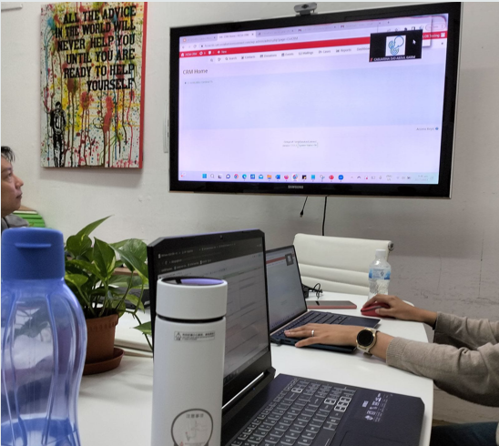
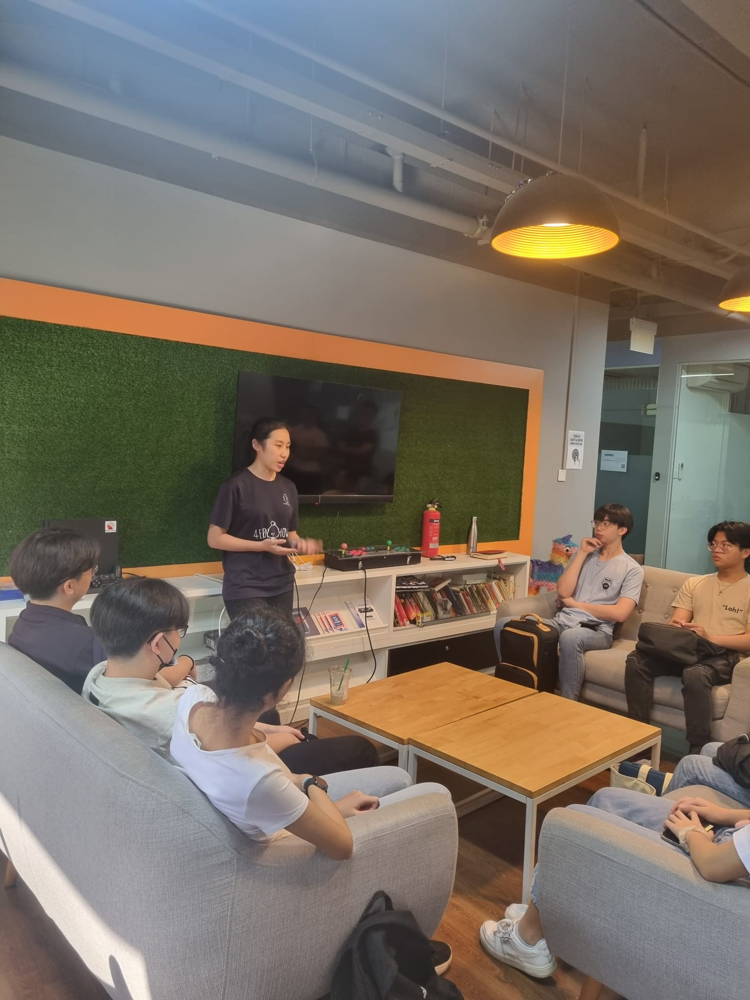
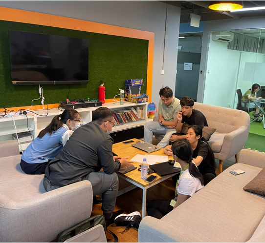
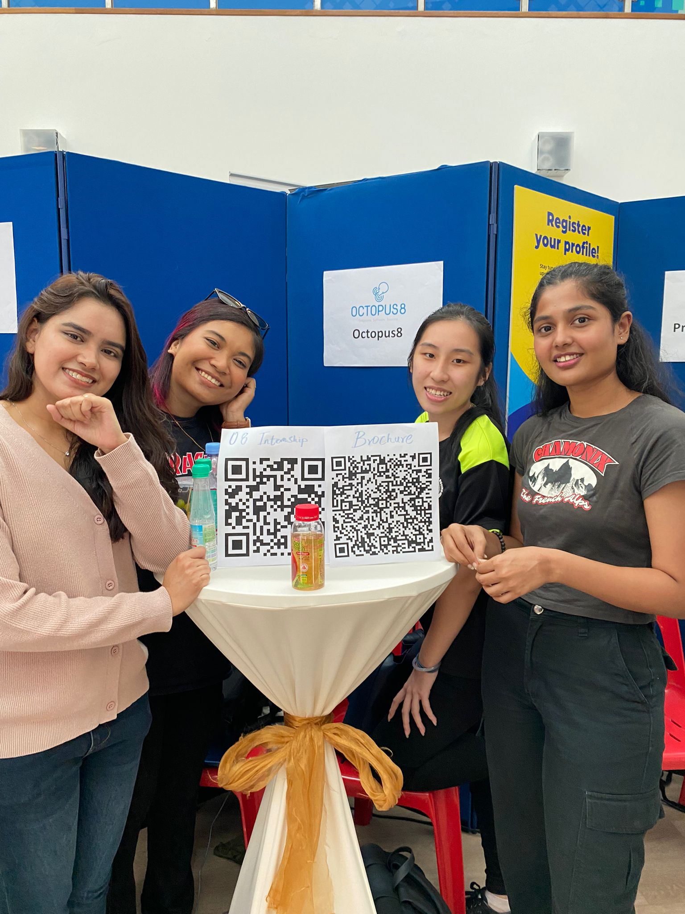

Internship Overview
As a UAT Lead at Octopus8, a social enterprise startup, I was responsible for ensuring software solutions met client requirements through comprehensive testing. The company specializes in building bridges between institutions and people through their unique CRM system - SocialServicesConnect.



Key Responsibilities
- Led User Acceptance Testing for all company projects
- Developed UAT test cases and scripts for Case Management System
- Conducted data migration, cleaning and importing for client systems
- Facilitated client testing sessions and acted as liaison between stakeholders
- Created detailed reports documenting test outcomes and identified issues
Core Systems Worked On
Case Management
Implemented testing for client case tracking systems
Volunteer Management
Tested volunteer coordination features
Donor Management
Verified donation tracking functionality
Skills Developed
UAT Testing
Quality Assurance
Data Migration
CRM Systems
Client Communication
Test Documentation
Key Achievements

- Successfully led testing for 5+ major client projects
- Received positive feedback for clear communication with non-technical clients
- Identified critical issues that prevented post-deployment problems
- Converted to part-time position after internship completion